No Comment
Sélection d'images de slogans, de montages ou de blagues*. Parce que l'humour et l'ironie sont une thérapie contre l'indifférence. Flyers ou visuels à partager.
(*) le lien vers la source web supposée des images est donné à titre purement indicatif. Contribuez en envoyant vos images à no comment, ou bien postez la sur le canal telegram (cf. Manifeste).


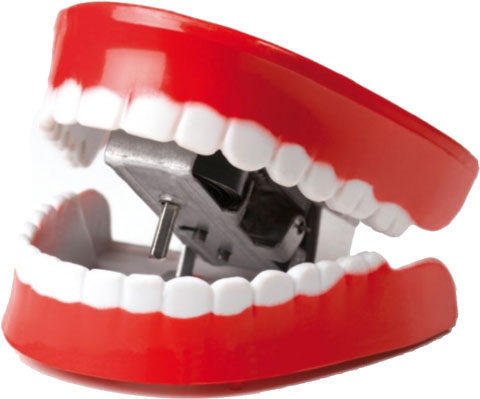 M et Mme PTITEDOSE ont 5 filles. Comment s'appellent-elles (patois autorisé) ? Réponse: Justine, Emma, Anne, Corine, Melusine
Suite au conseil de défense du 15 février 2024, le gouvernement a fait passer en procédure accélérée la loi imposant le déambulateur pour toute personne de plus de 35 ans. Saluons son bilan après 3 mois d'application: baisse de 20% des admissions aux urgences pour fracture des plus de 70 ans. Nos hôpitaux sont soulagés, les directeurs pourront même fermer 10 services d'urgence grâce à cette mesure et renvoyer une centaine d'infirmiers. Par contre le taux de suicide dans la tranche d'âge 35-50 ans a bondi de 80% sur la même période.
"L'état de bonne santé est un état précaire qui ne présage rien de bon" Dr Knock
Marianne macrolysée par les QRCodes
réalisé par Corine Saint-Blancat (IconoClash)
cliquez sur l'image pour agrandir

Le Grand Reveil (telegram)
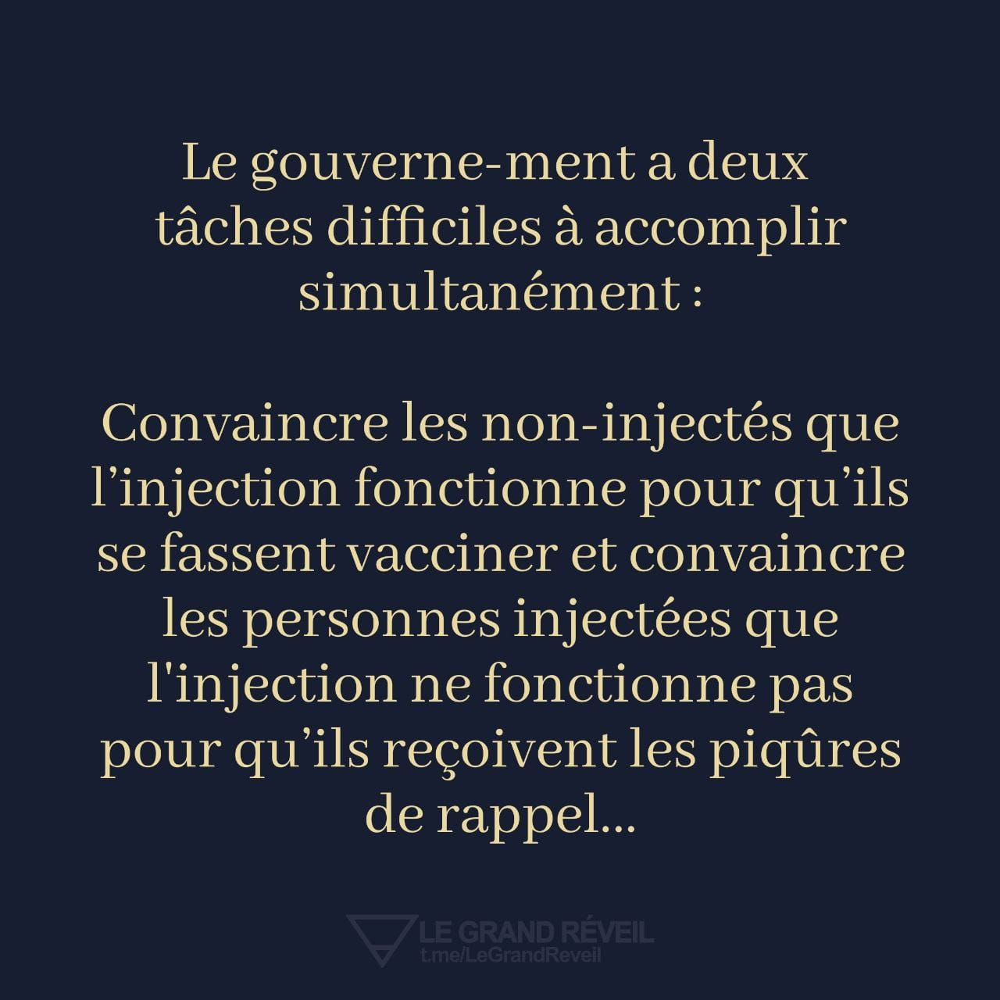
par le dessinateur australien Michael Leuning
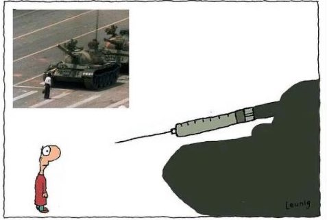
{kind=link}
Campagne ARS à l'ICES de La Roche Sur Yon (oct. 2021)
"casser les chaines de transmission"...
puis plus loin... "les vaccins aujourd'hui (ne réduisent) pas la contagiosité". Faudrait savoir !
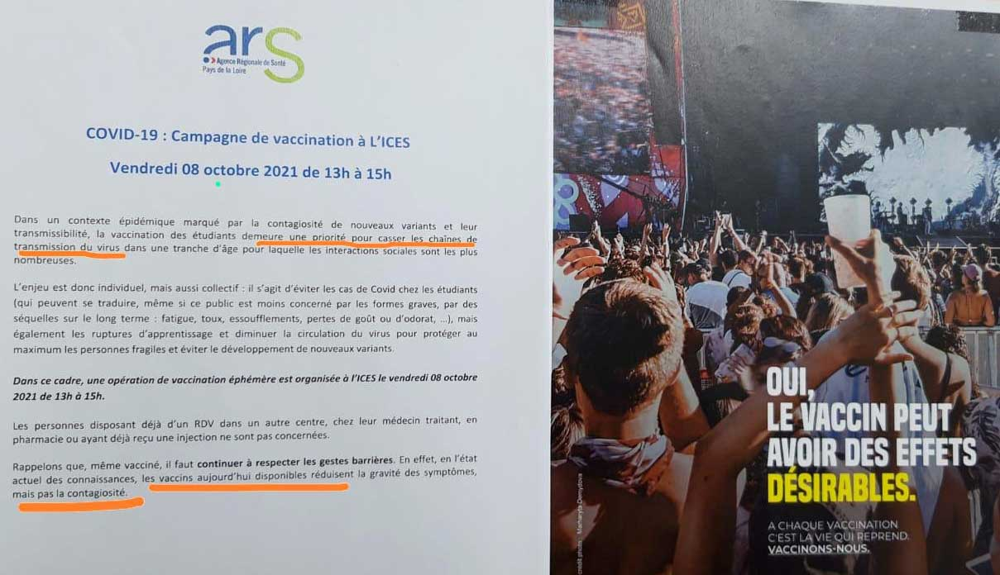
{kind=link}
{kind=link}
dans une manifestation le 2 octobre 2021
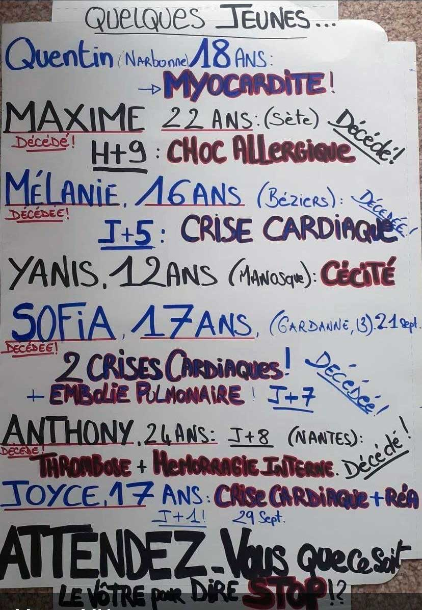
{kind=link}
le Dr Folamour de BigPharma lance sa campagne marketing (vu dans Le Temps)
Proposer ou Imposer? Quoi, l'obsolescence programmée ?
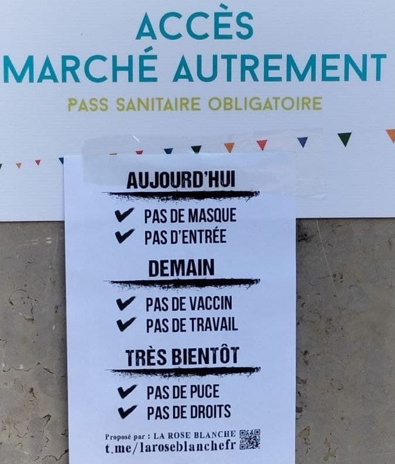
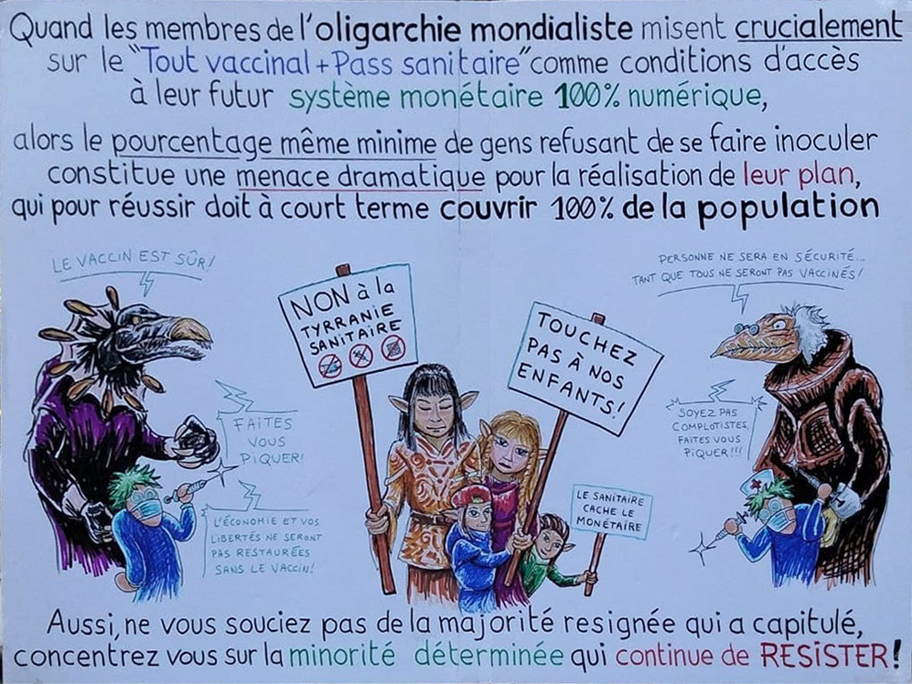

Dernière minute après la réussite du vaccin Covid, l’Europe commande 500 millions de doses du vaccin Pfizer contre le SIDA. Par contre comme il n’empêche pas les contaminations et qu’il ne protège pas complètement les vaccinés, il faudra bien sûr continuer à utiliser le préservatif et privilégier les télé-rencontres !
dans une manifestation à Marseille
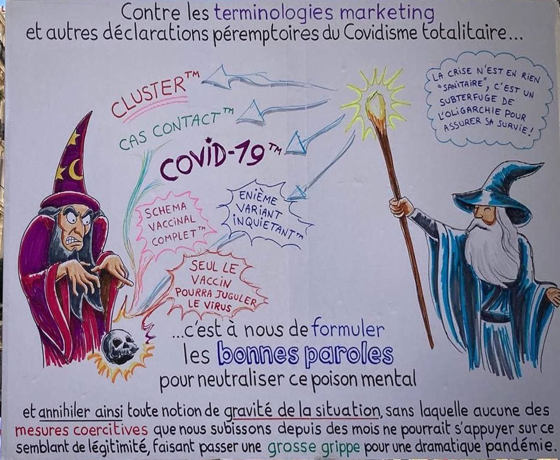
origine
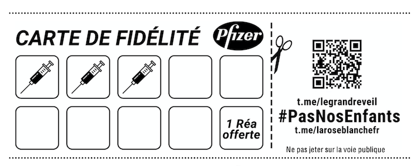
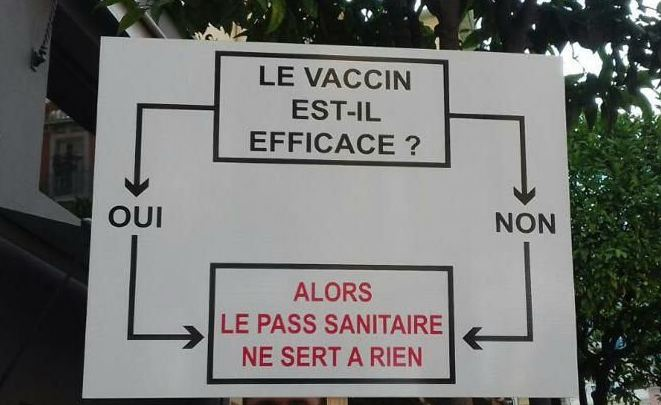
origine
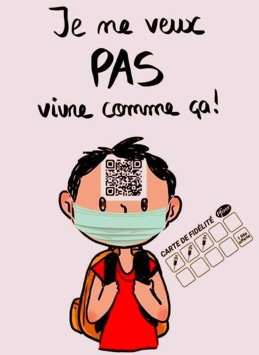
Blague envoyée par un collégien du comité
- papa tu as entendu parler du nouveau variant ?
- lequel toto ? le variant epsilon ?
- bah non pas celui là, le variant zeta, celui qui donne un cerveau !
- ah zut alors, dommage qu'avec tous les vaccinés au gouvernement ils ne sont pas près de l’attraper !
origine
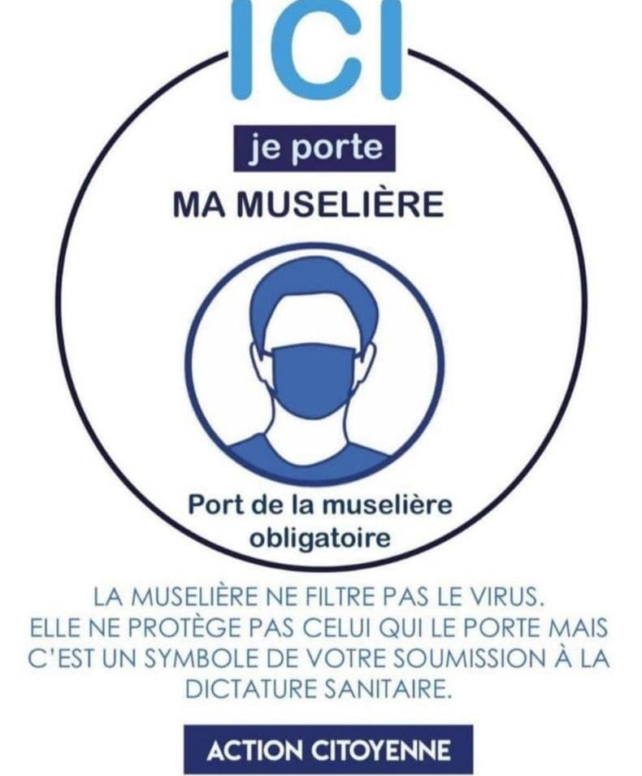

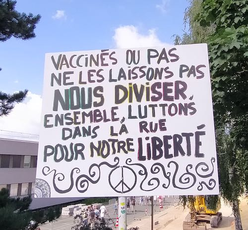
{kind=link}